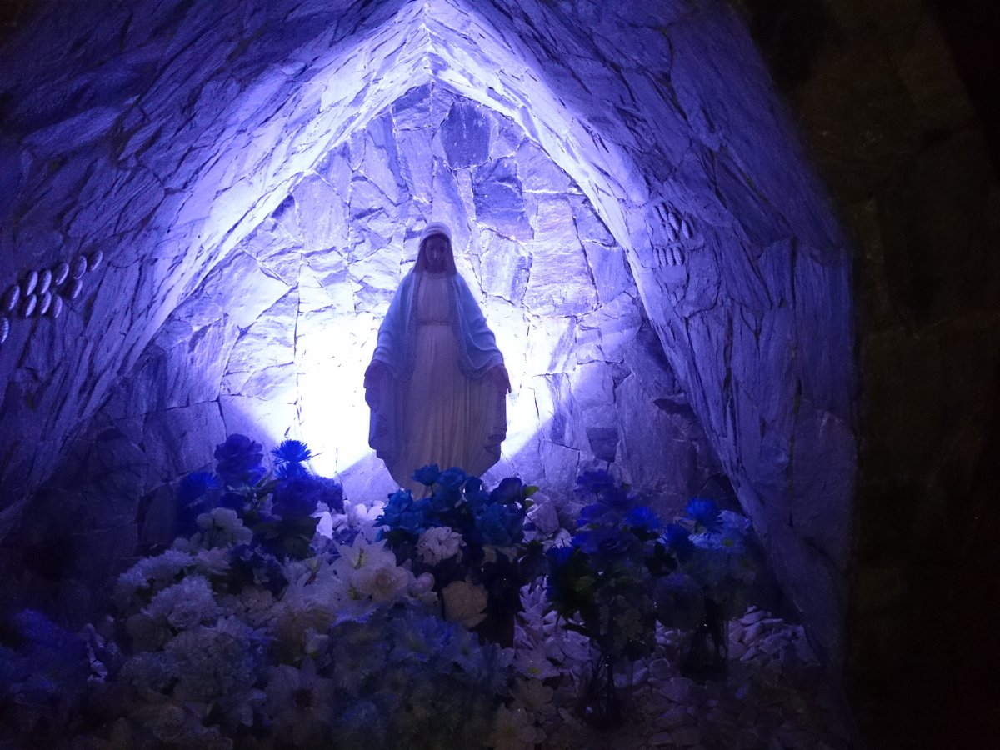

Por meio de Maria, Deus quis que o Salvador viesse a nós.
Deus quis precisar de Maria (Gen 3,15)…´Ela te esmagará a cabeça´.
É por Maria que devemos ir a Jesus, porque Jesus veio a nós por Ela.
É Mãe de Deus
Jesus é Deus. E Maria é Mãe de Jesus. Isabel lhe disse:
´A que devo a honra de receber a Mãe do meu Senhor?´(Lc 1,43) Os santos a chamam
de ´Onipotência Suplicante´, isto é, pode tudo com as suas súplicas a seu Filho.
TEOTHOKOS (Mãe de Deus) (Gal 4,4)
É Imaculada (08 de dezembro)
Isto é, foi concebida no seio de sua mãe (Sta. Ana) sem o pecado original,
que todos os homens herdam dos pais. Maria foi preservada do pecado original
pelo sacrifício de Jesus na Cruz. Deus antecipou para Ela a redenção.
Para Deus o tempo não é obstáculo. Este doma foi proclamado pelo Papa Pio IX, 1854, solenemente,
e confirmado pela própria Virgem em Lourdes, 4 anos depois, quando disse à menina Bernadete:
´Eu sou a Imaculada Conceição´, em 1858.
Maria foi livre do pecado para que Jesus também o fosse; isto é, livre das cadeias do pecado,
da morte e de Satanás, para poder vencê´lo e libertar a humanidade escrava.
Maria é sempre Virgem
Maria sempre quis ser Virgem, isto é, consagrada inteiramente a Deus.
Mas Deus precisou dela para Mãe de seu Filho. Como para Deus tudo é possível,
Ele a preservou Virgem perpetuamente. A Igreja ensina que Ela é ´Virgem antes do parto,
Virgem no parto e Virgem após o parto´. É uma glória que Deus quis lhe dar. É dogma de fé.
É um milagre, que não pode ser entendido pela ciência. (Concílio de Cápua, Itália, ano 381)

É a predileta do Pai
Maria foi a eleita do Pai entre todas as mulheres de todos os tempos e lugares.
Isabel, cheia do Espírito Santo lhe disse; ´Bendita és tu entre as mulheres´(Lc 1,42).
Foi a sua profunda humildade a razão de sua escolha por Deus. Ela mesma nos ensina isto no Magnificat:
´Ele olhou para a humildade de sua serva´(Lc 1,48). Quem se humilha será exaltado, disse Jesus.
Ninguém se humilhou tanto como Maria, por isso ninguém foi tão exaltada como Ela. Ela mesma diz:
´Todas as gerações me proclamarão bem aventurada´(Lc 1,48). Sendo Mãe de Deus , o Rei,
Ela foi humilde, simples, silenciosa, sofredora…. Maria só apareceu nas horas difíceis:
Em Caná da Galiléia, no Calvário, na fuga para o Egito, no serviço a Isabel, etc…
Os humildes são ocultos. Ela é ´cheia de graça´(Lc 1,30 e 28)
Maria é a Esposa do Espírito Santo
Ela concebeu Jesus pelo poder do Espírito Santo (Lc 1,35). Ele é seu Esposo.
Onde está Maria está o Espírito Santo. Foi Ela que o trouxe em Pentecostes (At 2).
Diz São Luiz de Montfort: ´Quanto mais o Espírito Santo encontra Maria em um coração,
mais Ele vem a este coração e o santifica´. Deus quis ter Mãe, escolheu Maria,
quis ter uma filha especial, imaculada, escolheu Maria, quis ter uma esposa, escolheu Maria.
Que glória a de Maria!
Jesus foi submisso a Maria e a José
O criador se fez sujeito à sua criatura ´E ele lhes era submisso´ (Lc 2,51).
Também no céu Maria continua Mãe de Jesus, a quem Ele tem a alegria de ´obedecer´.
São José, depois de Maria, é o santo de maior glória e poder junto a Deus,
por ter sido o eleito para pai adotivo (legal) de Jesus.
Maria é vitória de Deus contra o mal
Ela esmaga a cabeça da serpente infernal (Gen 3,15).
É preciso estar protegido pelo seu manto virginal.
É Ela que está arregimentando hoje o seu Exército de filhos fiéis para dar combate aos
pecados do mundo: drogas, vícios, prostituição, homossexualismo, violências, ódios,
assassinatos, corrupção, etc… É preciso rezar o Terço todos os dias, até o Rosário todo,
para ter a força de Maria. Falar aqui sobre a importância do Rosário. Rezando´o,
contemplamos a vida toda de Jesus. Em cada Ave Maria lhes saudamos com a mesma saudação do Arcanjo
Gabriel e Sta. Isabel, e pedimos que ela rogue por nós.
Ela é medianeira de todas as graças
Maria é o canal de todas as graças. Se Jesus, a maior graça, a salvação, veio por Maria,
é lógico que as outras graças, que são menores que essa, também vêm por Maria. Ela é a ´Avenida´
ampla e perfumada que Deus abriu para chegarmos a Ele. Não queira usar outro caminho.
As bodas de Caná mostra o poder intercessor de Maria (Jo 2). Explorar isto. ´Pede á Mãe que o ´Filho atende´.
Maria é nossa Mãe
Jesus no´la deu como Mãe, na Cruz. Na hora de sua morte, isto é muito significativo.
Ela oferecia Jesus na cruz ao Pai, por nós, ao mesmo tempo Jesus a fazia nossa Mãe.
De verdade, não só de palavras.(Jo 19,25´27) ler. Ela é a nossa Mãe espiritual.
É ela que forma e modela a nossa alma para Deus. Ela nos leva ao caminho da santidade,
de modo rápido, fácil, seguro e curto. Ela ´adocica´ a nossa cruz de cada dia,
como a Mãe adocica o remédio amargo que o filho precisa beber. Leve Maria para sua
casa (no seu coração) como São João o fez. Ela o guiará, sustentará na fé,
protegerá nos perigos e ensinará na lei de Deus.
Maria foi Assunta ao céu (15 de agosto)
Levada ao céu de corpo e alma. Só Ela e Jesus estão com os seus corpos no céu.
Os santos só estão com as sus almas. Os corpos só ressucitarão no juízo final.
Maria já ressucitou, está gloriosa de corpo e alma diante de Deus e intercede
por cada um de seus filhos com poder. Ela prepara para nós um lugar no céu.
´Nós somos cidadãos do céu´(Fil 3,20) disse São Paulo. Maria nos espera lá.
É dogma de fé proclamado por Pio XII em 195.
Maria é a Rainha do Universo
Veja (Apoc 12,1). É o universo glorificando a sua Rainha.
O sol, a lua e as estrelas era tudo o que os antigos conheciam do universo.
A Mãe do Rei é Rainha. Festa celebrada pela Igreja em 22 de agosto.
Todo o poder foi dado a Maria abaixo de Deus, no céu, na terra e nos infernos.
Todos lhe foram submissos: anjos, homens, demônios.